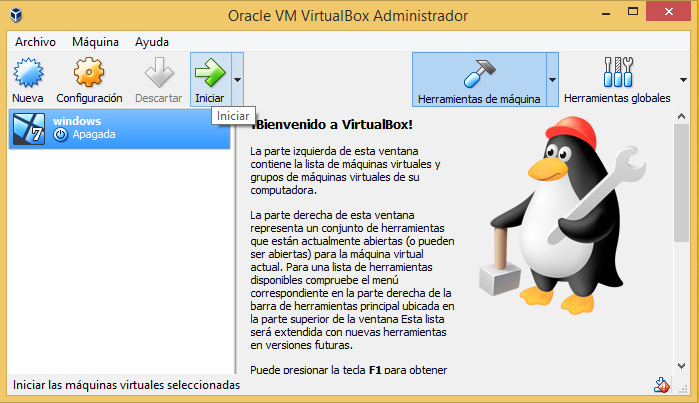

INSTALACION DE UNA MAQUINA VIRTUAL (VIRTUALBOX)
VirtualBox es un software de virtualización para arquitecturas x86/amd64. Por medio de esta aplicación es posible instalar sistemas operativos adicionales, conocidos como “sistemas invitados”, dentro de otro sistema operativo “anfitrión”, cada uno con su propio ambiente virtual. VirtualBox ofrece algunas buenas funcionalidades, como la ejecución de máquinas virtuales de forma remota, por medio del Remote Desktop Protocol (RDP), soporte iSCSI, aunque estas opciones no están disponibles en su versión gratuita. Resulta una aplicación extremadamente útil si estamos casi siempre trasteando con sistemas operativos nuevos o versiones Betas inestables. Un tema que tenemos que tener presente y que mucha gente me lo comenta es que la experiencia de uso del sistema no será igual a la de tener un sistema operativo instalado limpiamente en el ordenador. Pasos para la instalación de VirtualBox:
1.-Se muestra una pantalla donde se da la bienvenida al asistente para crear la máquina virtual. Dar clic en next (siguiente).
2.-Nos muestra la configuración personalizada haga clic en los iconos en el árbol de abajo para cambiar la forma en que se instalarán las funciones. Clic en next.
3.- Seleccione la forma en que desea que se instalen las características. Clic next.
4.-Muestra una advertencia de interfaces de red. Clic en Yes.
5.- El asistente de configuración está listo para comenzar la instalación personalizada. Clic en Install.
6.-Muestra una leyenda donde pregunta si desea instalar dar clic en instalar.
7.- Nos muestra la instalación completa clic en finish.
CREACIÓN DE UNA MAQUINA VIRTUAL.
1.- Muestra una pantalla de bienvenida e iconos para crear la máquina virtual. Clic en Nueva.
2.- Dar nombre a la máquina, escoger tipo y versión del software dar clic en next .
3.- Seleccionar el tamaño de la memoria. Clic en next.
4.- Seleccionar lo que se desea hacer en el disco duro. Clic en crear.
5.- Seleccionar tipo de archivo de disco duro. Clic en next.
6.- Seleccionar el almacenamiento en unidad de disco duro física. Clic en next.
7.-Verificar los datos de ubicación y clic en crear.
8.- Seleccionar unidad de arranque clic en iniciar esperar a que cargue.
 . . .
VIDEO